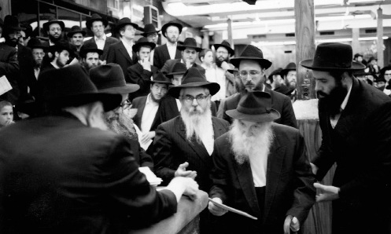

Model of a Chassid from Days of Yore
A modest attempt at describing an incredible Chassid, a throwback to earlier generations, who lived amongst us until very recently – R’ Aharon Yosef Blinitzky a”h, whose yahrtzait is 5 Shvat.

R’ Aharon Yosef Blinitzky was a unique individual. The Rebbe told his secretary, R’ Leibel Groner, after R’ Blinitzky left yechidus that the yechidus with this Chassid was “a ruchnius’diker (spiritual) yechidus.”
Indeed, R’ Aharon Yosef Blinitzky was a prime example of a Chassid from years past, to whom matters of this world meant nothing. An outstanding example of this took place during the difficult war years in Samarkand, when thousands perished from hunger and disease. R’ Blinitzky volunteered to bury these Jews.
He lived in France for decades and considered himself an ordinary Chassid, but when he would be asked a question in Nigleh or Chassidus, everyone saw his greatness. Every time he passed by the Rebbe for Kos Shel Bracha, after the Rebbe poured him some wine, he would follow him with his holy eyes; it was a sign of admiration for a Chassid who was a p’nimi.
***
R’ Aharon Yosef Blinitzky, who was known as Aharon Yoshe, was born on 12 Adar 5665/1915 in Disna, in the Soviet Union. His father was the Chassid R’ Yisroel Noach (known as R’ Yisroel Noach HaGadol) and his mother was Shterna the daughter of R’ Yitzchok Disner, one of the distinguished Chassidim of the Tzemach Tzedek and the Rebbe Maharash.
As a child, he learned by the melamed R’ Boruch Yosef of Disna, about whom it is said that his talmidim were the outstanding students in Tomchei T’mimim in Lubavitch.
In his youth, he was educated to hiskashrus to the Rebbe. One year, his father even took him to Rostov to the Rebbe Rashab. They walked there. Throughout the years, R’ Yisroel Noach would leave his home in Disna on Rosh Chodesh Elul in order to reach the Rebbe by Rosh HaShana.
On that childhood visit, he had yechidus along with his father and heard a maamer Chassidus from the Rebbe. He was one of the last Chassidim of our generation to have seen the Rebbe Rashab.
He also merited basking in the light of the Rebbe Rayatz. All his life, he nostalgically recalled the farbrengen of the Rebbe Rayatz on Yud-Tes Kislev 5684, the first farbrengen of the Rebbe Rayatz that he attended. Interestingly, this was also the first farbrengen of the Rebbe Rayatz that the Rebbe MH”M attended.
When he was a boy, his family moved to Kremenchug in the Ukraine where his father directed the underground Tomchei T’mimim. At age 15 he went to learn in yeshiva. He studied Nigleh and Chassidus in Tomchei T’mimim yeshivos for close to ten years.
Due to the relentless persecution by the secret police, the talmidim had to wander from city to city. R’ Aharon Yosef also wandered among various yeshivos including those in Charkov and Nevel. He learned with R’ Nachum Goldschmidt as his chavrusa, who later became famous for his shiurim in Tanya, and also with his good friend R’ Mendel Futerfas.
R’ Aharon Yosef was known among his friends as having an excellent ability to explain Chassidus. As his friend from those days, R’ Leib Adelman a”h put it, “When they wanted to point at a Tamim who had a total grasp of a given topic in Chassidus, they would point at R’ Aharon Yosef.”
During World War II, when the Germans conquered large sections of the Ukraine, hundreds of thousands of people fled to safer places. R’ Aharon Yosef also escaped from the Ukraine, and after an exhausting trip he arrived in Samarkand in Uzbekistan, far from where the war raged.
Life was far from easy though. Starvation and disease were the lot of the refugees who flooded the city. R’ Aharon Yosef, in his unassuming manner, was involved in all aspects of Jewish and Chassidic life in the city. The masses of refugees, including many Lubavitcher Chassidim, had no work, nor did they have any money in order to buy food. Even if they had money, it was impossible to buy food with it. The result was starvation with many dying due to malnutrition.
The chevra kadisha of the Jewish-Bucharian community could not keep up with the work, which is why some of the Chassidim joined in their holy work. This work required actual mesirus nefesh. Sometimes, there were bodies that had lain in the street for days or those who had died from contagious diseases.
R’ Aharon Yosef was one of the volunteers for the chevra kadisha. For many days he went with his friends to the hospitals in order to find Jews who had died so as to bring them to Jewish burial.
One day, it occurred to them – why were they devoting so much energy in order to bury the dead when they could use that energy to bring food to sick people in the hospitals? They began working on this front too and thanks to the work of the Chassidim and their wives, many Jewish lives were saved from starvation.
His nephew, R’ Chaim Blinitzky, spoke about this bikkur cholim work:
“R’ Aharon Yosef saved my father. It was when his brother, Yitzchok (Itche), was a young man and became sick with tuberculosis. R’ Aharon Yosef, who had so much Ahavas Yisroel, was very concerned about his younger brother and went with him to consult with top doctors. He did not give up even when the doctors told them that his brother had very little time left to live. He bought medicine for him and went with him to health spas and anywhere that held out a promise of healing. Thanks to my uncle, my father lived to age 76.”
His friends say that R’ Aharon Yosef was especially devoted to according the proper honor to the dead. It sometimes happened that they dug a grave, but due to the heavy workload they did not manage to bury the deceased in it until night had fallen. R’ Aharon Yosef would remain all night near the grave to save the spot for its intended occupant. When necessary, he would also guard the dead in a special room at the cemetery.
One time, at a farbrengen, R’ Aharon Yosef spoke about this and even learned a lesson in Avodas Hashem from it. He said that throughout an entire night he saw two dead Jews lying next to one another without either one thinking good or bad about the other. “That is the idea of death,” he said. “But we who are alive must constantly think about the welfare of our fellow Jew.”
R’ Aharon Yosef was one of the founders of Tomchei T’mimim in Samarkand, along with R’ Mendel Futerfas, R’ Nissan Nemanov, R’ Abba Pliskin, and R’ Shlomo Matusof.
R’ Refael Wilschansky related:
“I remember that during the war, R’ Aharon Yosef would learn a shiur Chassidus every day with R’ Zushe Kublitzer, and then he would take a large sack and go around to Jewish homes in order to collect bread for the bachurim who learned Torah in secret locations. This was all in addition to his work in visiting the sick and his involvement in the chevra kadisha.”
Despite the unbearable situation, R’ Aharon Yosef kept the ways of Chassidus, davening with avoda, and learning Chassidus. R’ Moshe Nisselevitz, director of Chamah in Eretz Yisroel, related:
“Although he worked for many hours for the chevra kadisha, his head was immersed in learning Chassidus. One day, I saw him arguing about a point in Chassidus with R’ Yona Cohen (who ran the network of Tomchei T’mimim yeshivos in the Soviet Union for several years). They were arguing about the meaning of ‘rasha v’ra lo’ in Tanya. R’ Aharon Yosef said that in our days, we are not even on the level of rasha v’ra lo, while R’ Yona maintained that we cannot disparage our generation and at least we are considered on the level of rasha v’ra lo.”
He was also one of the main speakers at the Chassidus shiur that was attended early in the morning by young Chassidim. Among the participants in the shiur were R’ Zalman Butman, R’ Abba Pliskin, and R’ Shlomo Matusof. R’ Zalman Butman once told his son R’ Sholom Dovber, “If there remains a young man in Samarkand who understands Chassidus, he is R’ Aharon Yosef.”
***
In Kislev 5707, R’ Aharon Yosef left the Soviet Union in the famous escape via Lvov. From Poland he went to Paris where he held a position as an elementary school rebbi. He also worked as a Shamash in Rabbi Zalman Schneersohn’s shul. In 5720, he moved to the quarters set aside for his family in Yeshivas Tomchei T’mimim in Brunoy where his father served in the role of mashpia.
He worked at menial jobs. For a while he was the bath attendant in the mikva and then he manufactured wine. He never considered himself anything special and acted with utter bittul, not only towards others but towards himself.
His life was conducted with great modesty and he was removed from matters of this world. Whoever knew him stressed that R’ Aharon Yosef was a figure not of this generation. In the years that he lived in Brunoy, he slept without a mattress. “He would laugh at this world,” said R’ Sholom Ber Butman.
He would often enter the zal of the yeshiva and talk with the bachurim about what they were learning or even engage in “idle talk” with them, which was generally stories about Chassidim from previous generations. In later years, he began teaching Gemara, at first to young children and then to yeshiva bachurim. He was eventually appointed as mashgiach for Nigleh. His fellow Chassidim of his age would point out laughingly that although he was known throughout the years as a baki in Chassidus, he had become a mashgiach for Nigleh, while R’ Lazer Gurewitz, who was a great Baal Nigleh, was appointed as the mashgiach for Chassidus in the yeshiva in Kfar Chabad.
He considered his teaching position a shlichus, which is why he undertook to give private shiurim. He set himself the goal that a talmid needed to know the material that was learned by the end of the month. If he wasn’t successful, he did not take a salary.
R’ Yosef Yitzchok Wilschansky, the rosh yeshiva of the Chabad yeshiva in Tzfas, was a student of R’ Aharon Yosef. “He was very devoted to his talmidim. He loved them very much.” R’ Wilschansky described him as a model of a genuine Chassid.
***
R’ Aharon Yosef was a particularly emotional Chassid. R’ Moshe Nisselevitz recalls his davening with amazement:
“I still remember him sitting on Shabbos in the Chabad shul in Samarkand. Although there were other ovdim, he was special. He would sit in his corner and daven and cry silently from the depths of his heart.”
R’ Sholom Dovber Butman also spoke about this:
“My father blew the shofar in Paris and R’ Aharon Yosef called out the sounds. My father told me that every year, R’ Aharon Yosef would cry so much at the t’kios that his Siddur became damp with tears.”
Every Shabbos, he would daven at length, with d’veikus and with sobbing. That is what his talmidim in Brunoy said.
R’ Yosef Yitzchok Gorewitz, mashpia in Tomchei T’mimim in Migdal HaEmek, said:
“After the bachurim finished davening on Shabbos, he would take his father home and then return to the zal. He would stand in the corner of the second room and begin davening with tremendous d’veikus, awash in tears. His tallis was soaked with tears.
“I never saw a davening like R’ Aharon Yosef’s in my life,” said another talmid, R’ Menachem Mendel Gluckowsky, rav in Rechovos. “Everybody is familiar with R’ Zalman Kleinman’s painting of a Chassid sitting in shul alone with a tallis and his two hands stretched upward. That is how R’ Aharon Yosef looked. On Shabbos, he would sit in the second room of the yeshiva with the tallis covering his head, and he would sing niggunim as his tears flowed.”
His emotions were expressed not only in davening but also when he learned. He once arranged to learn Derech Chaim with R’ Zalman Labkowski. This work is known to contain expressions of harsh rebuke. Since R’ Aharon Yosef was such an emotional person, he wasn’t able to continue learning and the shiur stopped shortly after it began.
His nephew, R’ Yosef Yitzchok Ginsberg relates:
“I once accompanied R’ Aharon Yosef, and on the way he told me the story about the Rebbe Rashab when he was in a resort area. After the davening the Rebbe Rashab remained in shul and davened with great sobs. The gabbai wanted to close the shul, but when he saw the Rebbe crying he did not want to disturb him and he waited on the side until he would finish davening. In the meantime, he watched the Rebbe crying and he began crying too since he was reminded of his sorrows.
“When R’ Aharon Yosef related this, he began to cry. It was very moving to see an old Chassid moved to tears by a story about the Rebbeim.”
R’ Aharon Yosef Blinitzky was exceedingly modest. Only those who were close to him were aware of his greatness. He would spend much time toiling over Chassidus. He once told someone that he had devoted two weeks of study to each maamer in Hemshech 5666, a fact that illustrates his great depth.
Despite his wide-ranging knowledge in Chassidus, he was also a scholar in Nigleh. Someone who learned in Brunoy had this to say about his scholarship:
“For a period of time he was the mashgiach and the meishiv. The bachurim who knew that he hid his knowledge would test him in learning, and I also wanted to check out what he knew. I found a difficult question in the Maharsha on the sugya and I asked him this question as though it was my own. He explained the entire sugya to me, first the Gemara and then the Rashi and Tosafos, and after all his explanations I no longer had a question. I couldn’t refrain from telling him that it was a question of the Maharsha. He realized then what I had been up to and he warned me not to try that again. Then he showed me how I had not understood the question properly and he provided an alternate explanation of the Maharsha.”
R’ Yitzchok Goldberg, rosh yeshiva of Tomchei T’mimim in Migdal HaEmek, said:
“R’ Aharon Yosef was special. He was genuine and everything he did was with real bittul without standing out, with utter simplicity. When he taught, he explained things again and again until the talmidim understood it properly.
“Despite his advanced age, he behaved with complete bittul and was a sort of friend of the bachurim. He was also full of Ahavas Yisroel for all.”
Although he was all bittul, when it came to the honor of Chassidus and the honor of the Rebbe, he was quite zealous. He would sometimes meet people from other groups, and if he heard one of them say something disparaging about Chabad or about the Rebbe, he would rebuke him harshly.
He was once talking about Chabad customs with a Misnaged. The person thought R’ Aharon Yosef was putting one over on him, but R’ Aharon Yosef answered firmly, “I can make fun of myself, but I don’t make fun of others.”
The Rebbe once told him in yechidus to say T’hillim every day “because when he says T’hillim, Dovid HaMelech says it along with him.”
One year, R’ Nissan Nemanov returned from 770 and told the Chassidim that the Rebbe spoke a lot about Moshiach. Afterward, R’ Aharon Yosef gave his own explanation:
Two of the talmidim of the Maggid were dear friends. One day, they swore to one another that when one of them would die, he would come to the other one in a dream and tell him what went on in the World of Truth. It came the day when one of them died. A few days later, he appeared to his friend in a dream and told him that when he arrived at the Heavenly Court, they enumerated his mitzvos but with each mitzva they found a personal agenda. This was the case with all the mitzvos that he did except for one, when he was once honored with lifting the Torah scroll. He had run towards the bima and did hagba. That was the only mitzva that he did for no personal benefit.
“So too,” explained R’ Aharon Yosef, “the Rebbe asks that every Jew do all he can so that Moshiach comes, so that at least one time it will happen that a Jew will do something for the revelation of Moshiach without any personal agenda. And then Moshiach will come.”
R’ Aharon Yosef was punctilious when it came to respect for his parents. Despite his own advanced age, he would exert himself for them, providing whatever help they needed, cooking, cleaning, and taking care of whatever needed to be done.
“It was a heartwarming sight to see R’ Aharon Yosef, who was over 70 at the time, bringing his father to yeshiva and bringing him home every day,” recall his talmidim.
He received the Rebbe’s bracha for his outstanding honor for his parents. One time, when he passed by the Rebbe for dollars, the Rebbe blessed him with long life in the merit of his honor for his parents. Indeed he lived till the age of 96 and passed away on Shabbos, 5 Shvat. May the image of this extraordinary Chassid serve as an example to future generations.
CHASSIDIM ARE ONE FAMILY
Story #1:
In Disna there were two Lubavitcher teachers who were good friends, R’ Boruch Yosef Kozliner and R’ Yitzchok. When R’ Yitzchok’s daughter married R’ Yisroel Noach Blinitzky, the young couple wanted to live near her parents, but they did not find a suitable place to live. R’ Boruch Yosef then cleared out a place in the yard of his home, and his friend’s daughter and her husband lived there for a long time.
R’ Yitzchok eventually died of typhus and the doctors said it was dangerous to be involved in his burial due to fears of contagion. R’ Boruch Yosef was unwilling to allow his friend not to be buried properly and he drank a cup of vodka and said: Now I am clean (i.e. sterile) and I won’t be harmed by typhus. And he buried his friend R’ Yitzchok, and it was only by a miracle that he did not get sick.
The friendship between the two Chassidim continued in later generations too. R’ Chaim Kozliner, the son of R’ Boruch Yosef, was the dear friend of R’ Aharon Yosef Blinitzky, the grandson of R’ Yitzchok.
In 5745, R’ Aharon Yosef visited Eretz Yisroel. During the visit, he went to see his good friend, R’ Chaim Shneur Zalman Kozliner (Chazak). The two of them were excited to see one another, but it was even more moving to see how they couldn’t part from one another. When R’ Aharon Yosef left the house, Chazak followed to escort him and said, “Come, let us talk a bit more.” Then, when R’ Aharon Yosef got into the car, Chazak shouted in great sorrow, “Aharon Yosef! Aharon Yosef!” He could not bear the thought of not seeing his good friend again.
Story #2:
The friendship between R’ Aharon Yosef and R’ Mendel Futerfas began when they learned together in Charkov. It continued when they started the Tomchei T’mimim yeshivos together in Samarkand.
Then the Iron Curtain dropped and separated them. R’ Aharon Yosef had left the Soviet Union while R’ Mendel remained behind. They missed one another so much that when R’ Mendel left the Soviet Union he went to France. At the airport, when he was met by R’ Moshe Nissan Azimov, R’ Mendel told him, “One of the reasons that I came to France is in order to see my friend who is like a brother to me, R’ Aharon Yosef Blinitzky.”
On Shabbos, they had a farbrengen/kabbalas panim in Brunoy for R’ Mendel, and R’ Aharon Yosef also attended. Usually, R’ Aharon Yosef would stand on the side at farbrengens and not say l’chaim, but in honor of R’ Mendel he sat down to this farbrengen which was particularly joyous.
At a certain point, R’ Mendel poured him a l’chaim but R’ Aharon Yosef declined, saying he was unaccustomed to taking l’chaim. R’ Mendel said, “If they had told you that if you drink I would get out of Russia, wouldn’t you drink? If so, you should drink now too, in my honor.”
R’ Aharon Yosef acceded and said a few l’chaims with him. Following this, R’ Aharon Yosef began revealing things he had never spoken about, such as what the Rebbe Rashab had said about his father, R’ Yisroel Noach, that when he said, “Amen Yehei Shmei Raba” it pierced the heavens.
This wondrous friendship blossomed over the years into a love that was not contingent on anything extraneous. R’ Chaim Blinitzky relates:
“It was in the midst of a family simcha in 5750 when R’ Mendel said to me, ‘If only I could see R’ Aharon Yosef now.’ After thinking for a moment, he went on to say, ‘I can’t go to France to see him now, so you go and see how he feels.’ I figured that R’ Mendel was merely expressing a wish, and of course I did not go to France.
“A month later, when my father-in-law R’ Shlomo Maidanchik called me on R’ Mendel’s behalf and asked me why I did not go to France, I was very taken aback. A short while later, R’ Mendel bought me a ticket and I was his shliach to see how my uncle, R’ Aharon Yosef was.
“The love amongst Chassidim is like the love for family.”
Shneur Zalman Berger. "Model of a Chassid from Days of Yore." Beis Moshiach, no. 864 (January 11, 2013).